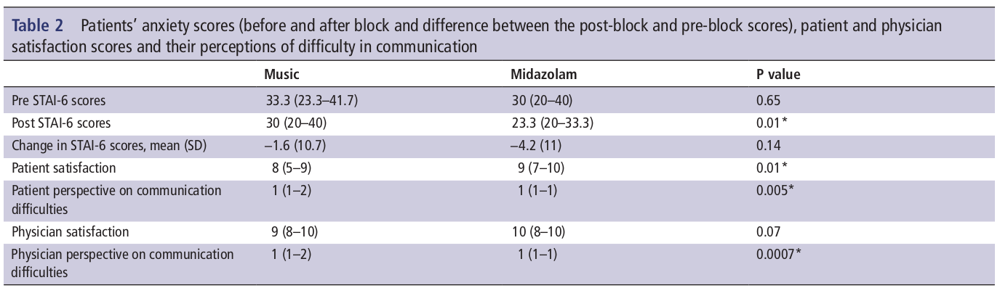

For the last decade or so, the song "Weightless" has floated around the internet as a bit of content, for lack of a better way to put it. Its story is as follows: researchers worked with the music group Marconi Union in producing a song to alleviate anxiety. This story asserts that, with whatever process they followed, they were incredibly successful, as journalists assert the song "reduces anxiety by 65%" [1].
This is undeniably very interesting. Music and musicians want to produce effects in a listener, but this goes beyond that. If you went to to a band's show hoping to be impacted in this or that way by the music and the volume, that's one thing. The assertion here is that in proper, double blind, medical journal testing, Weightless scores on a level similar to prescription medication. Just take the Independent, which says "Music medicine offers an alternative to intravenous midazolam prior to single-injection peripheral nerve block procedure". [2]
But some studies are better than others, and as far as I can tell nobody has done a proper audit of this "Music medicine" idea. But now is a good time to mention -- I am a layperson. Don't flush your Xanax down the drain based on a blog post telling you to listen to a song.
These Independent articles are citing a 2019 study published in the British Medical Journal, which compares Weightless to intravenous Midazolam for 157 patients being treated for preoperative anxiety. The authors even have time to talk some shit before they get into the numbers, quoting a study that concludes "...a recent Cochrane review showed low quality of evidence that midazolam reduces pre-procedural anxiety compared with placebo.".
So how'd Weightless do? [3]

To try to break that down, the article states: "The change in the [...] anxiety scores from after to before the procedure were similar in both groups". Except this doesn't look like it's true though? Per the article, the mean change in the music group was −1.6, while the mean change in midazolam group was −4.2. So, excuse my laypersonness and all, but the song performed worse than the drug, which according to the authors may do nothing at all. Still a layperson here, but it looks like the authors' concluded that the drug performed "similarly" anyway, and since they said so in the abstract journos just ran with it. I had a hard time believing this, until I found a quote buried in the same article which freely admits that "There was better anxiolysis with midazolam than with music".
So, was there a "A new study by US researchers reveal[ing] that playing the “world’s most relaxing song” before surgery could be just as beneficial for calming a patient’s nerves as medication."? No. There's a song that researchers played before surgery that patients said didn't stack up to the drugs.
Far more extensive than the UPenn paper is a review from 2013 called "Music for stress and anxiety reduction in coronary heart disease patients". The paper posits that, since getting a heart disease diagnosis is scary, stress results, which makes heart disease worse. The review measures the utility of mitigating stress with "musical intervention". It asserts that "results indicate that music interventions have a small beneficial effect on psychological distress in people with CHD and this effect is consistent across studies".[4] Having skimmed a few of the individual analysis, sure.
However, the review also asserts that "studies that used patient-selected music resulted in greater anxiety-reducing effects"[4]. So, the music itself might not produce the anxiolytic effect, as much as the activity of listening to music, and thinking of things that are associated with the chosen music. The subjects of the original Weightless study even thought this, to the chagrin of the authors, who wrote that "Patients were not given a choice to select their own music preference; although patient selection of music could have changed these results, studies demonstrate that research-selected music is effective". Aside from being a very funny thing to write, it also appears to be untrue, according to the UPenn authors' own citations (the Cochrane review shitting on Midazolam? that's this review) not to mention their patients. Anyway.
Where does this leave us and our Music Medicine? People certainly do like Weightless, and while it probably isn't as good as benzos, I'm sure it has some kind of effect on the listener, there's a reason there's people sleep to 10 hour loops of it on youtube, and not hardcore or something. But ultimately the music that calms people down is just the music they like. And there's something heartening in that I think. You could hire as many researchers as you want, pair them up with the absolute legends of Marconi Union, and task them with making "the world's most relaxing song". It might be effective, even research selected, but ultimately people take comfort in the music that they associate with the life they have outside, where they don't have to worry about "pre operative anxiolytics".
[1] https://www.independent.co.uk/arts-entertainment/music/news/relaxing-song-best-weightless-marconi-union-youtube-surgery-anxiety-a9011971.html
[2] https://www.independent.co.uk/news/health/music-therapy-surgery-anxiety-operation-sedative-a9010701.html
[3] https://www.bmj.com/company/newsroom/music-may-offer-alternative-to-preoperative-drug-routinely-used-to-calm-nerves/
[4] Bradt, Dilco, Potvin, Music for stress and anxiety reduction in coronary heart disease patients